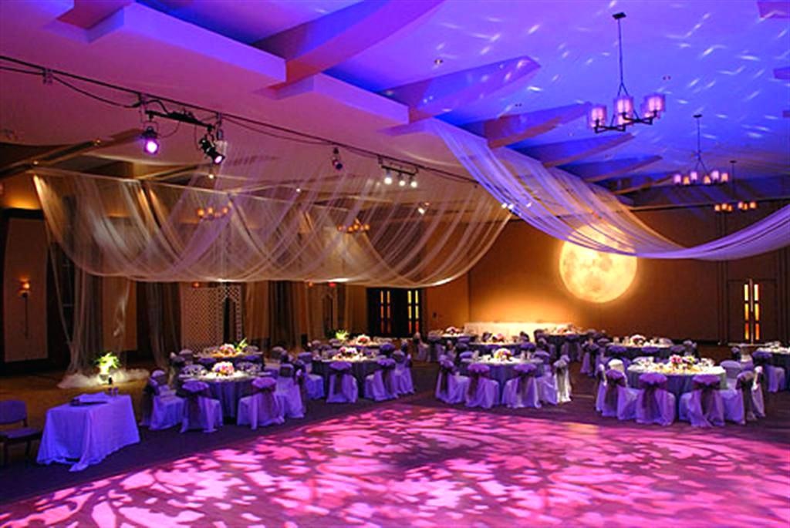

CONFERENCE

We have a dedicated team of people to assume responsibility for different aspects of the planning, negotiations, and promotion. Our core team will likely include:
Planning team: Conference venue, accommodation, activities, catering.
Administration team: Budgeting, attendee registration, ticket sales. This team/person will also be the main point of contact for questions related to the conference.
Marketing team: Contacting the media, creating promotional material, managing your website, blog, and social media activities.
Sponsorships team: In charge of securing sponsors, applying for grants, and fundraising. (Only relevant for conferences that rely on external sources of finance. Obviously)
Volunteers: Helping with all on-site activities on the day of the conference: door management, ticket scanning, keeping track of the guest list, manning the wardrobe, guiding people, etc.
Having a budget will also help us to set the price for participating in the conference.
- Venue
- Accommodation
- Transportation
- Catering
- Speaker fees
- Activities
Armed with this information, we should begin drafting an agenda. A very top-level conference agenda might look something like this:
Day 1:
Theme-setting keynote speech by an influential speaker
Speaker presentations
Common dinner
Day 2 and onward:
Shorter hands-on sessions and workshops
Networking and team-building activities
Final day:
Motivational speaker to end on a high note
When it comes to the shorter sessions, there are plenty to choose from: Small-group lectures, workshops, interactive sessions, Q&A sessions, and many more
They will typically range from 1 to 2 hours and depend on the conference theme. We'll also need to decide whether to have everyone participate in all sessions or have a number of them running in parallel and let people pick their preferred topics.